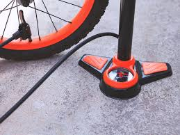

5 Dicas Essenciais para a Manutenção da Sua Bicicleta
Manter sua bicicleta em ótimas condições não apenas prolonga a vida útil dos componentes, mas também garante sua segurança e melhora sua performance...
1. Mantenha a Corrente Limpa e Lubrificada
A corrente é o coração da transmissão da sua bike. Uma corrente suja e seca causa desgaste prematuro das engrenagens...
2. Calibre os Pneus Regularmente
Pneus com a pressão incorreta podem causar furos, diminuir a velocidade e afetar o controle da bicicleta...
3. Verifique os Freios
Seus freios são seu item de segurança mais importante. Antes de sair, aperte as manetes de freio para garantir que elas não toquem o guidão...
4. Faça um Check-up dos Parafusos
A vibração da pedalada pode soltar alguns parafusos com o tempo. Regularmente, verifique o aperto dos parafusos do guidão...
5. Limpeza é Fundamental
Lavar sua bicicleta não é apenas uma questão de estética. A limpeza remove sujeira e detritos que podem acelerar o desgaste de peças importantes...
Seguindo essas dicas, sua companheira de duas rodas estará sempre pronta para a próxima aventura!